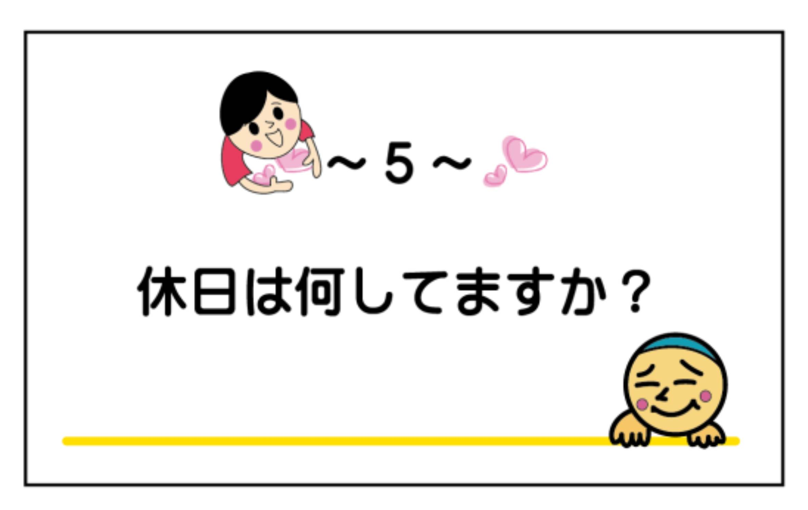
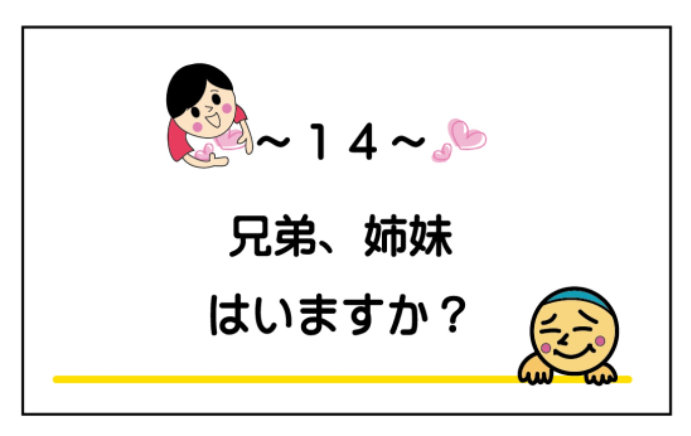
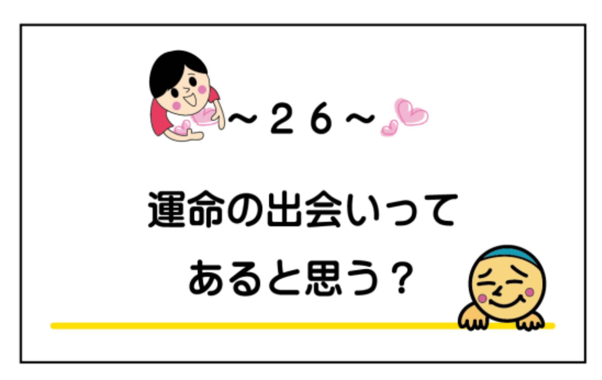

| 『最初のトーク術』婚活マニュアル きっかけ編 : ～好印象＆また会いたいと思わせるマル秘テクニック～ | |
| 結婚活動コーチングトレーナー 入倉秀 | |
| (2019) | |
『最初のトーク術』マニュアル きっかけ編
～好印象＆また会いたいと思わせるマル秘テクニック～
一般社団法人 日本地域活性化事業協会 代表理事
婚活・恋活イベントを運営し、１１００回以上主催してのべ２万 人( ２０１９年５月時 点) を超える参加者を拝見させて頂いて...、実は婚活・恋活イベントで効果的な方法があるのです。実際に私が主催しているセミナーや書籍『結婚活動必勝マニュアル』（詳細は参考程度に巻末に記載）を読んで実行して頂き効果が出ている人が続出しています。ではなぜ、結婚活動においてうまく行く人とうまく行かない人が出るのか...。そもそも現在の平成において結婚とは、
【資格や試験を受けるのと同じことです】
自動車免許や就職試験のように誰でも受かる可能性があったり、様々なタイプの会社があるように自分に合った就職先があるかと思います。実は私入倉も就職試験で３０社程受けましたが、内定を頂いたのは１社でした。今思えば結婚活動と似ているなと思います。就職では理想の会社と相思相愛（内定）ですが、結婚活動では気になる異性と相思相愛で結婚につながります。話を戻しますと、
『うまくいくやり方を知っているかどうかであなたの人生が決まる』
もう一度いいますね。あなたがもし結婚したいのなら平成においての結婚活動の仕方を知っていれば実は簡単に結婚出来る可能性があります。私入倉は婚活イベント主催者ですが、婚活歴５年の経験者です。皆さんと同じようにうまくいかない...断られ、ふられたりを繰り返した時期もありました。ですが、無事に結婚することができました。私はお世辞にもイケメンではありません。笑 坊主ですし、顔が恐いですしどちらかというと無愛想です。ですが婚活歴５年で何とか卒業出来ました。卒業できたのも結婚活動のうまくいくやり方を理解出来たからだと思っています。そして今婚活イベントを主催しながら真剣に恋愛・結婚を考える独身者の方々に書籍やセミナーなどを通して結婚活動のうまくいく秘訣をお伝えしています。
『結婚活動のやり方は書籍やセミナー・メルマガなどで言っていることは理解出来てきたが、実践編としてのアドバイスがほしい...』
というご意見を多数頂き...、今回は実際に当団体のイベントで利用している『最初のトークカード』とうまくコラボしたトーク術をご紹介させて頂きます。現実的な話で出会って１カ月で結婚している方も多数います。確かに一握りの話しかもしれませんが可能性としてはもちろんあります。もっと多くの頑張っている方に早く結果を出してほしい。けど実践と言う部分で恋愛経験や結婚活動での知識と行動の
【婚活力】
というのは不足している方が多く、なかなかうまく行かない方もいらっしゃいます。では手っとり早くうまく行く方法...、必勝マニュアルのような結婚活動の知識があれば、異性とのトーク力が身に着けば比較的相手にＯＫをもらいやすいです。冒頭の就職試験と同じように自分のことがうまく伝わればいいのです。でも婚活力が不足しているとうまく伝わらない...。非常に残念です。私の場合婚活中に自力でこのトーク術を実践と失敗を繰り返しながら構築していきました。でもそんなことしていると時間がかかりますし、方向性を間違えると確実に異性受けしないどころか婚活疲れに発展してしまい結婚する意欲が失せてしまいます。今回この書籍を使ってぜひ基本のトーク術を身につけて最短で成功して頂ければと思います。
今回この最初のトークカードという、異性との会話を基本としたカードを作らせて頂いた経緯として...
『異性と何を話していいのか分からない...』
『会話が盛り上がらないし話せるネタがない...』
というご相談を多く頂いておりまして...。ではそのきっかけを作れるカードがあれば比較的会話はしやすいのではないかと思い制作をしました。当初は婚活・恋活イベントで初対面の異性との会話で役立つというところにフォーカスし試作品を作成しました。試作品は通称『ラブカルタ』というラブ＝愛という部分にフォーカスしてお題を構成したため人によっては抵抗のある内容もあり、これだと多くの方にうまく活用してもらえないと思い...試作に試作を重ね、最初のトークカードが完成しました。まさしく、最初のトークで話せるベタな内容からお互いの距離を縮める事の出来るちょいムズ編まで我ながらの一品になりました。近年では、結婚活動という言葉が発祥し結婚するためには自分から活動しないと結婚できない時代になってしまいました。これは昭和時代には無かった風潮で...数十年前までは結婚適齢期になると必然的に回りから（会社の上司や先輩からの）紹介やお見合いなどから【妥当な異性】を紹介され
【誰でも結婚出来る時代背景】
がありました。情報化社会や個人情報プライバシーが厳密になってきた近年では、結婚の善き時代は終了し自分の結婚は自分で何とかしないとならなくなってしまいました。時代が進むにつれ生きやすい時代になりましたが、逆に結婚できにくい時代に突入した関係で、人口問題、晩婚化、非婚化、少子化、過疎化、少子高齢化と様々な社会現象の起因に繋がっているものと思います。もちろん昔に比べて今の独身者が結婚を望まない人が多いかと言うとそうでもないと思います。けど昔に比べて結婚の環境が一変してしまったため簡単には結婚できない...。
【自分で何とかしないと結婚出来ない時代】
になってしまいました。今の独身者の恋愛力・交際経験が少ないのではないのです。一昔前よりは恋愛力は上達はしているかと思うのですが、現状では結婚に対しては自力で何とかしなければならず...。さらにいうと親世代は自力というよりはサポートの影響が大きく、この結婚活動においては経験したことが無いが故に具体的なアドバイスが出来ずに独身者は何をすればいいのかわからないという経緯があります。もちろん、親を始め社会として独身者の結婚を斡旋していますが、拍車をかけるように
【結婚するまでの情報量と恋愛経験と知識に折り合いがついておらず】
結婚したいけど...恋愛したいけど...うまくいかない...というところでつまずいている独身者が多いのも事実です。話がかなりそれましたが...。ではこの自力で結婚活動をしなければならない時代で結婚するのには...恋愛経験や知識を蓄えないとならないのですがそんなこと言っているとどんどん加齢するという現実が待ち構えており晩婚化の一途に繋がってしまっている現実があります。そんな時代背景の中私入倉が社会に出来る事...ということで
【結婚活動の適切なやり方さえ理解してしまえば比較的簡単に結婚出来る】
と言う事実が分析出来ましたので、書籍【結婚活動必勝マニュアル（当巻末に流れを記載）】にて結婚までの各ステップで起こりうるポイントやうまくいかない原因をまとめさせて頂きました。実際にマニュアルを読んでうまくいかない方法からうまくいく方法に切り替えただけでお付合いや結婚する方がおかげさまで増加しています。
『じゃあそれだけでいいの？』
と思ったときに実際には起こりうる問題として、基本の異性との会話を勘違いしている人や、生活習慣や仕事の関係で異性慣れしておらず恋愛経験不足から進展しない方もいるという基本のコミュニケーション不足が問題になるケースもありました。今回最初のトークか―ドをきっかけに異性とのトークを円滑にして、次の展開に進んで頂ければと思っております。トークカードの内容のほとんどは...私入倉の結婚活動経験からも実証済です。実は私入倉も婚活歴５年の活動経験があり当初は全くと言っていいほど会話が苦手で...そんな状態ですから異性からモテるわけもなく...と言う苦い経験を何年もしました。私は元々工学部出身で最初の就職先も機械の研究開発設計職でしたので、異性と会話するというよりは機械や材料の金属と触れ合っている時間の方が長かったです（笑）。でもそんな私入倉でも、会話のコツを理解してしまえば異性と会話がすることができるようになり...無事婚活歴５年で結婚することが出来ました。そういう意味では会話に苦手意識がある方がいますが、それは単なる経験不足で誰でも会話の仕方され理解してしまえば会話は確実に上達します。そこは自信を持ってもらっていいと思います。まずは会話の基本となるきっかけのお題は大切です。しっかりと基本をマスターして異性と楽しい会話をしてみてくださいね。
ではそのトークカードについですが...。このカードは基本的な会話をマスターすることを目的としており、その具体的な内容として
『異性と何を話したらいいのか？』
と言う部分にフォーカスして具体的なお題で構成されています。トークカードマニュアルでは基本的なアドバイスとＮＧについてご紹介しており、各カードのポイントもまとめてあります。もちろんカードマニュアルが正解ではありません。そもそも正解などなく
【あなたの個性が相手に伝わり相手の個性を理解できる】
ことが大切です。あくまでもカードマニュアルはアドバイス的な立ち位置でご理解頂ければと思いますので、より具体的なカードの回答は控えてあります。個性が失われてしまいますので。そんなこといっても自分の回答に自信が持てないと言うときは入倉までメールまたは直接聞いてみてくださいね。最近の会話の傾向としては、
【自分では頑張って会話をしているがうまく次の展開に繋がらない...】
という方が多いのが現実問題としてあります。要は会話が盛り上がっていると自分では思ってもデートや連絡先の交換には至らないケースということです。これは会話のキャッチボールができていないことが要因です。本章の基本でお伝えしていますのでそこは確認してくださいね。異性との会話の仕方をしっかりと理解してお互い好印象になるようにぜひがんばってみてくださいね。最初のトークカードはお題が書かれたカードですが会話を円滑にするためのツールの一つです。くれぐれもカードのお題に問われ過ぎず、ときにはカードの話しから脱線して違う話題で盛り上がることもありですからね。
【ポイントは異性と次の展開にすすめるかどうか？】
であり
【会話が盛り上がること→連絡先の交換・デートには必ずしもならない】
ので注意してください。逆に会話が盛り上がらなくても相手に興味を持ってもらえれば連絡先の交換もデートも可能です。詳細は【結婚活動必勝マニュアル】に詳しく書いてありますのでご興味あればぜひ読んでみてください。
最初のトークカード【きっかけ編】
ではここから最初のトークカードの構成についてご紹介します。
【きっかけ編】
【ちょいムズ編】
の２種類があり、各５０枚のカードで構成されています。きっかけ編については、基本的に答えやすい日常的な内容やクローズドクエッション（ＹＥＳもしくはＮＯで答えられる質問）に近い形で選択で答えられる内容構成となっております。ですので、なかなか異性と会話が出来ない場合や緊張したりでうまく盛り上がらない場合はまずはこちらのきっかけ編がおすすめです。答えやすいですし簡単な質問ですので万人受けする内容となっています。このきっかけ編を使ってまずは会話の基本
【会話のキャッチボール】
をマスターして頂ければと思います。もちろんカードの内容であるお題は大切ですが、基本のやりとりをマスターしないことには次には進めませんので注意してください。簡単で答えやすい内容だからこそまずは基本に忠実に何度も練習してください。できればカードが無くてもそのお題は使えるようになるまで練習できると効果が著しくなってきますよ。
最初のトークカード【ちょいムズ編】
きっかけ編の中級編ということでチョイムズ編のご紹介です。こちらの質問は
【価値観や生活習慣、恋愛・結婚の考え方などがわかりやすく】
なっていますが、構成としてはオープンクエッション（ＹＥＳまたはＮＯで答えられない）が中心ですので、考えた上での回答がほぼ必須となります。中には選択式のカードもありますが、それなりの理由が大切な要素になってきます。きっかけ編がある程度理解できて、基本の会話のキャッチボールが出来るようになりましたらこちらのカードに進んで頂ければと思います。もちろん、きっかけ編をマスターしないとちょいムズ編が使えないと言う意味ではありませんので同時進行でちょいムズ編の内容を考えながら基本の会話のキャッチボールを理解して頂くこともいいかと思います。
『最初のトーク術』マニュアル きっかけ編
～目次～
７、関係が浅いうちは、冗談でも相手をバカにしたり否定しない（誤解を招く）
～４３～初めてのバイトは何？また一番楽しかった仕事（アルバイト）は？
一般解答（コミュニケーショントレーナーのスタッフなっちゃんの一般的な意見）とポイントとＮＧをご紹介させて頂きます。くれぐれもこのアドバイスに囚われることなく、オリジナリティある回答を考えて会話を盛り上げてくださいね。何度も言いますがお伝えすることは完全な正解では無いですし、あなたが考えた回答が間違っているわけではありません。基本的なアドバイスとＮＧです。ですので、極力具体例は控えてあります。個性をアピールしてもらいたいのでご自身の意見を考えてください。もし不安な場合は入倉までこの回答はどうか？と聞いてくださいね。メールでも直接でもお答えしますので。
１、恋愛コミュニケーション
まず最初に知っておいてほしい事が...、恋愛や結婚において大切な要素についてです。会話の基本についてはこの後お伝えするのですが、そもそもなぜこのような会話のマニュアルや【最初のトークカード】が必要なのか...。私入倉も婚活を始めた当初は、
『異性との会話は話せることを話せば会話は成り立つ』
と無意識に思い込んでいました。でもこれって大きな勘違いだということを婚活歴２、３年目でやっと気付き...。（皆さんにはもっと早い段階で気付いてもらいたいと思い本書を書いたということもあります）ただコミュニケーションを取れればうまくいくという幻想は吹き飛びました。実はきっかけとなったエピソードがありまして...。婚活イベントや合コンでコミュニケーション能力が高い人は異性からモテる？という固定概念があり、もちろんその場はうまくいくのですが、恋愛や結婚に発展しない方が多数いる...。逆に婚活イベントでも合コンでコミュニケーション能力が高そうじゃなくても...恋愛・結婚に発展している方がいる...という事実を知ってしまった時...
【必ずしもコミュニケーション能力が高いからと言って恋愛結婚できるわけではない】
という衝撃的な事実に気付いてしまいました。一般的なコミュニケーション能力というと...
【自己アピール→他者承認】
という過程でお互いのコミュニケーションを円滑にすることを第一に考える事かなと思います。けど実際の恋愛・結婚では、恋愛コミュニケーション能力...
【自己アピール→他者承認→共感→共同作業】
が出来ないと進展しませんし、通常のコミュニケーションの他者承認まで出来ていたとしてもその後一緒に何かが出来ないと恋愛や結婚まで進展しません。通常のコミュニケーションですと、その場が最優先されたり他者とうまくやっていくと言う部分では非常に有効な手段かと思いますが、恋愛・結婚においては同じ時間の共有であったり共に生活するということが大切な要素になります。ですので、自分を伝えて相手を理解することも大切ですがその後の
【共感や共同作業（生活）が出来るのか？】
という部分のウエイトが恋愛や結婚では大切です。本書では基本のトークについてご紹介させて頂いておりますし、表面的には【会話】という言葉がメインですが、恋愛コミュニケーションの観点からお伝えすると、その会話からお互い共感出来たり、一緒に共同作業が出来るのか？というイメージやワクワクが相手に伝わるかが大切な要素になります。カードの質問に対して自分なりの解答をすることで自分を伝えて相手を理解することも大切ですし悪いことではありません。伝えたいことは...
【自分の回答が正しい、間違っているではなく、その回答から相手との共感や共同作業のきっかけを作れるか？】
という部分です。実は通常の会話力というところで、この部分を分かっている人は恋愛コミュニケーション能力が高く、恋愛や結婚に発展しやすいと思います。自分の伝えたい事を伝えたり相手の話しをうまく聞くということはコミュニケーション能力が高いかもしれませんが、恋愛コミュニケーションの能力と言う部分ではイコールではありません。ぜひ勘違いなさらずに本書を読み進めて頂ければと思います。ポイントやＮＧについてもこの観点を基にアドバイスさせて頂いております。
２、会話のキャッチボール
基本で一番大切な
【会話のキャッチボール】
についてです。そもそもですが...、出会いの場（婚活・恋活）でも合コンでも１対１のデートでも...異性との交流で一番大切なのは会話のキャッチボールです。どちらかが一方的に話して聞き役に徹するのではなく、かといってお互い言いたい事を言い合うのではなく...、会話をお互い楽しむと言う意味で基本中の基本です。よく勘違いしている人がいますので注意してください。婚活・恋活イベントでも会話が盛り上がったのに...話が進んだ方なのに...連絡先の交換は出来なかった、断られた...という話をよく聞きます。これは会話のキャッチボールの勘違いということでどちらかが一方的に盛りあがってしまうケースです。自分のことも話しますし相手のことも教えてもらうと言う意味ではこの基本のキャッチボールが出来ていないと空回りということになります。よく頑張ってしまう方の典型として...頑張って自分のことを話す方がいますが...もちろん悪いことではありませんが、その後うまくいくかというとなかなかうまくいかないことがあります。異性と話すときはこの会話のキャッチボールを意識して...自分のことを話したら相手の話を聞く。一方的にボールを投げ過ぎず、受け取り過ぎずが大切です。
３、聞き上手が会話上手
会話のキャッチボールの次に大切なのが
【聞き上手】
です。会話が苦手であったり口下手ですと思っている人の多くは
【頑張って話そう】
と思い込んでいます。もちろん話すことも大切ですが、話し慣れていないとなかなか話せないのが現状としてあります。であれば話すことよりも聞き上手になった方が異性に好印象になりますので、まずはこちらを練習してください。では何を聞くのか？と気になりますよね。大切なのは
【相手が話したい事や話しやすい事】
を聞けると会話のキャッチボールはうまくいきます。とは言うものの相手が話したい事なんてわからないし、話しやすい事なんてわからないと思いますよね。確かにそうですよね。初対面であったりあまり会話をしたことがなければ難しいかもしれません。まずは相手が簡単に答えやすい所から聞いてみるのがお勧めです。例えば、仕事や趣味、マイブームや好きなテレビ映画、音楽、好きな食べ物など答えやすい事が良いかと思います。男性に質問をする場合、仕事のことや趣味のことは答えやすいかと思います。女性に質問をする場合は、趣味や最近ハマっている事、好きなテレビや好きな食べ物などが比較的答えやすいかと思います。ポイントは相手が日常で時間をかけて行っている事は専門性が増しますので答えやすいですし、緊張している場合はなおさらです。
４、どんどん答えるのではなく、相手に聞かれたら伝える
聞き上手の逆になるのですが、つい会話が盛り上がっていると思ってしまうと自分のことを答えたくなってしまいますよね。ついつい答えられることは答えて自分の中で盛り上がってしまい、どんどん答えてしまう...。とはまってしまうと...相手からすると印象が悪くなってしまうこともあります。ですがこのメリハリって実は難しいです。なので、会話のキャッチボールを意識するといいです。
【最初は相手の事がわからない】
【異性もあなたの情報は皆無】
なので理解してもらえていないと思います。慣れてきたらお互い会話が盛り上がるように積極的に会話をしてもらえればいいのですが、最初は基本に忠実の方がうまく行きやすいです。答えられることは答えたくなってしまいますが、そこは相手にしたら無関心なところですと...。なので、相手とのキャッチボールを意識してくださいね。
５、共通点のある会話（共通点をどんどん増やすと親近感）
会話のネタの一つで...共通点がある内容での会話は大切です。もっというと共通点が増えると何だか親近感がわき...。うまくいきやすくなったりします。初対面ですとお互いの情報が皆無で外見や雰囲気しかわからないですよね。なので、
『何を話していいのかわからない...』
話す内容については先ほどお伝えした通り話しやすいことから話せばいいのですが、その中でお互いの共通点をたくさん探してみましょう。
【共通点があれば初対面でも何だか親近感がわきませんか？】
実は私入倉もこの共通点で一気に距離を縮めた嬉しい経験があります。こればかりは仕組んだように共通点が見つかればいいのですが、なかなか見つからない事もあります。共通点があった際には積極的にそれを伝えてみましょう。逆に見つからなかった場合は、新鮮な意見が聞けて良かったですくらいの回答がおすすめですよ。
６、相手の興味がある内容
『皆さんは会話をする際にどんなことを意識して会話をしていますか？』
実は大抵の方が自分が話せる内容を話しているので、人によっては一人よがりな会話になってしまう方がいます。これって非常にもったいないなと感じてしまいます。私入倉も婚活歴５年ですので同じ状況になったことがありますが...。相手の興味がある内容の会話をすることが出来てから一気に次に繋がる確率が上がりました。そんなこと言ってもどんな事が相手が興味があるかわからないですよね。私もずっとその壁にぶつかっていました。一番わかりやすいのは、
『最近気になっている事は何かありますか？よくやることは？』
と聞いてみましょう。人によっては美味しいものを食べるとか仕事のこととか趣味のこととか...。気になっている事ですので少なからず興味はありますので話しは出来ると思います。また会話のキャッチボールの中で、相手の表情が変わったり声のトーンが上がったり、ベラベラと話し出したネタは相手が興味のある内容だと思います。そういうところを意識してみると会話のキャッチボールがうまくいきやすくなりますよ。
７、相手の話しは興味を持って聞く
相手が話しやすい内容であったり興味のある内容を話してくれている時にただ聞けばいいというわけではありません。この話は婚活セミナーでも紹介しているのですが、ただ聞き上手ではうまくいかない...ポイントとして、相手に興味がないことが伝わってしまうと言うことです。ただ話を振ればいいのではないのです。相手の話しには興味を持って聞くようにしてください。もちろんあなたにとったら無関心なことかもしれないですし、どうでもいいかもしれないです。でもこれが会話のキャッチボールです。これが理解できていないとうまく行きにくいですよ。あなたも自分の会話をしていて相手がそっぽを向いていたり手いたずらされていたら話す気がなくなりますよね？同じことを相手にしないように。もし知らない事だったら
【わからないので教えてください】
という精神でぜひ興味をもって話を聞いてください。相手も話を熱心に聞いてもらえれば嬉しいですし少なからず好意が生まれる可能性がありますよ。そもそもお互い情報が無いことからのスタートですので、興味を持って相手を知るという姿勢は大切ですし基本ですよ。
８、知ったかぶらない、謙虚に話を聞く（聞き上手）
聞き上手の延長線ですが、
【知ったかぶらない、謙虚】
は非常に大切です。よく婚活イベントや合コンなどの会話の一コマで...、知らない事を言うと恥ずかしいと思ってしまい知ったかぶってしまう方がいらっしゃいます。もちろん悪いことではないのですが、実は知らないと言う事がばれてしまうと...ちょっとイメージダウンに繋がってしまいます。であれば
【素直に知らないから教えて】
と言った方が相手に謙虚さが伝わり好印象になることも。人間ですのですべて知っているわけではないです。知らない時にいかに対応するのか？は実は大切です。強がらずにたまには弱い部分や知らないから教えてと言える素直な方は好印象のポイントですよ。結局、その場では何とかなってもその後続けていけばバレることも...。結婚では頼り頼られということがほとんどです。独身であればすべて自分で何とかしないとならないですが、結婚したらお願いすることもたくさんありますからね。練習だと思ってぜひ素直に教えてもらいましょう。
９、素直にすごいと思ったら褒める
『異性を褒めていますか？』
実は日本人の典型と言うか...、褒める事に慣れていなかったり、褒められていないとはにかんでしまったりする方がほとんどです。人間ですから褒められると嬉しいですよね。それがどんなことでも、小さいことでも褒められると嬉しいです。
『であればどんどん褒めてみませんか？』
必ずあなたの印象は良くなりますし褒めるということは相手を認めているという意味でも取られますので好印象です。積極的に異性のことは褒めてみましょう。きっと会話も盛り上がりますよ。
１０、今回がなければ次回はない（まずは好印象をゲットする）
かなり厳しいことですが、言葉の通りです。今回がうまく行かなければまたその異性と会いたいとは思いませんよね？ですので、常に毎回を全力でコミュニケーション（交流）するということは必須です。一期一会ですので、後悔もありますから。まずは会話のキャッチボールで好印象をゲットしてくださいね。初対面の異性ですと、第一印象や外見と言う要素はポイントとしてはかなりウエイトが高いです。ですが、私入倉のように外見があまりよくなくイケメンでなくても（笑）連絡先の交換は可能です。そこは
『イケメンだから可愛いからとかで連絡先の交換は必ずしも行わない』
『あなたの思いや相手に興味を持ってもらえれば可能』
ですので、最初のトークでいかにアピール出来るかが大切です。私のように最初に印象が悪くても挽回は可能ですよ。
１、反応がない...
ＮＧの基本についてご紹介します。これはどんな会話をしていてもあまり印象が良くないことですが。会話に対して反応が少ないということです。例えば、共感やうなずき、顔の表情（笑顔）なども含まれます。
【会話のキャッチボールが基本】
会話のキャッチボールを円滑に行うには...、相手の言動に対して反応がいかに出来るかということです。もちろんその異性と何度も会ったり相手の事が分かっている状況では話は別かもしれませんが、初対面であったりまだお互いのことを理解していない段階では、反応は最低限のマナーとなります。あなたも自分のことを話していて相手が興味なさそうにしていたら話す気がなくなりますよね...。それと一緒です。これは会話の最低限のマナーですの、相手が話している時は興味を持ってしっかりと反応しましょうね。反応については、
『うん』『そうなんだ』『へぇ～』
という言葉掛けから、体の動作で『うんうん』や表情で表わすこともＯＫです。
【相手が話している時は極力相手の目をみて会話を聞く】
【相手としてもしっかりと聞いてくれていると実感があり好印象】
ですので、目を見ると恥ずかしいこともありますが頑張ってみてはいかがでしょうか？
２、年齢や詳細な住所など
女性には一発ＮＧになりやすいのが年齢を聞いたり、詳細な住所について言及することです。とくに両者に対しては自分が言ったからあなたもいいなよ...的な感じでの誘導は一発でマイナス印象になってしまう恐れがありますので注意してください。わざわざ自分から嫌われにいかなくてもいいかと思います。気をつけましょうね。詳細な住所についてはＮＧですが、どこらへんに住んでいるかということで市町村を聞くことまではギリギリ大丈夫です。ですが、
『どこの近く？』
と会話を広げたつもりで聞くのもＮＧになりやすいので注意してください。年齢について男性はあまり抵抗が無い方が多いですが、女性からすればいきなりあって聞くのは失礼です。そこはお互いの距離が縮まってからでも遅くはありませんよね？
３、マイナス発言
ご自身の発言で自覚症状が無い方もいる...。知らず知らずのうちに自分で印象を悪くしてしまっているかもしれない
【マイナス発言】
世の中の出来事や事実は一つですが、考え方は二つ。よく書籍などでもありますが陰陽の考え方やプラス思考マイナス思考と言った感じです。例えば、もう使えなくなりそうなペンがあるとします。事実としてはもう使えなくなりそうなペンですが、考え方としては...
『もう使えなくなるから残念だな。ショック。』
『新しいペンを買えるチャンス。次はどんなペンを買おうかな』
また
『コップに水がもう半分しかないどうしよう。もっと飲みたいのに...』
『コップに水がまだ半分もある。嬉しいな』
この例えでは前者がマイナス思考で後者がプラス思考です。もちろん全てがプラス思考で言動をすることは無理があります。でも初対面やお互いが理解できない状況でマイナス発言ばかり繰り返してしまうと雰囲気がどんよりとしてしまいます。そこは素敵な異性に出会ってプラス思考を中心に会話を進めてください。実際に婚活イベントでもプラス思考とマイナス思考の人では圧倒的にプラス思考で会話する人の方がモテます。だってプラス思考の人と一緒にいた方が楽しそうでしょ。異性にワクワクするイメージを伝えられるかも...。最初のトークでは大切な要素ですからね。
４、悪口や汚い言葉や身内ネタ
マイナス発言の次にＮＧになってしまうのが
【仕事や他人の悪口や汚い言葉や身内ネタ】
日頃のストレスや大変な仕事の場合は愚痴をこぼしたくなることもあるかと思います。また自分の中でのマイブームであれば身内ネタも教えたくなるでしょう。もちろん全てが悪いわけではありませんが、初対面やまだお互いを理解していない異性にいきなりその会話はもったいないです。そういう発言からあなたの人間像がイメージされてしまいます。お互いの距離が縮まって慣れてきたらお互い話をする機会もあって当然かと思いますが、最初の段階では極力避けた方が無難です。また身内ネタは伝えたければさわりだけ話すことはＯＫですが、深入りすると相手がわかりにくい内容になりますので説明を細かくしないと伝わりにくいためリスクは高いです。まずはお互いを理解し合わないと前述の通り次はありませんのであなたの良いところが伝わるように、また相手の良いところを聞けるような会話のキャッチボールを心がけてください。
５、相手の会話の無関心（行動、発言）
ＮＧの基本の冒頭でご自身の無反応について触れましたが...。会話についての無関心も非常に大切な要素です。言っている事は類似しているのですがよくわからなくなってしまう方がいるため別枠でお伝えします。相手の会話について反応することはお伝えした通りです。でもただ反応すればいいのか？というと違いますよね。人によっては
【心ここにあらず】
というのが伝わって無関心だと思われてしまい非常にもったいないです。あなたの行動や発言は相手に取ったら重要です。反応がないのであればそこらへんの植物や建物に話しているのとかわらないですからね、やはり相手の会話に対して関心があるよと伝えながらの行動、発言は必須となります。
【もっと聞きたい！もっと教えて！】
という雰囲気ですと相手も話しやすいですし、もっと自分のことを伝えたくなりますよね？逆に無関心さが伝わってしまうと、『この会話面白くないんだ』とか『私との会話が楽しくないんだ』と誤解されてしまいます。
６、いきなり距離を縮めすぎる事（馴れ馴れしくなる）
意外と知らないＮＧとして...、自分では最善と思っていても相手からすると
『えっ？』
と思われてしまうことです。もちろん距離を縮める事はいいのですが、相手もいることですのでいきなりずかずかと相手の領域に入るのはあまりよろしくありません。もちろんメリットデメリットがありますのでリスクを覚悟で距離を一気に縮めるのはありかと思いますが、嫌がる異性もいますので注意してください。要するに
【初対面で慣れ慣れしくされると人によっては抵抗がある】
ということです。初対面で相手の情報が皆無の場合、無理して距離を縮め過ぎるよりは少しずつ距離を縮めた方がリスクは低くなります。
７、関係が浅いうちは、冗談でも相手をバカにしたり否定しない（誤解を招く）
これも誤解している人が多いのですが...。会話を盛り上げようと頑張って冗談を言う人がいます。もちろん悪いわけではありませんし、相手にも頑張っている事が伝わればいいのですが...、
【初対面では感覚と価値観がわからないので冗談が伝わりにくい...】
というデメリットのウエイトが高いです。たまに冗談で相手の意見を否定する方がいます。何度も伝えていますが
【お互いの人間性が理解された上でのコミュニケーション】
ですとその冗談での否定は成り立つのですが、理解する前では単なる人格否定と取られてしまい距離を置かれることがあります。冗談を言う分には良いのですが、相手の意見に対して否定と誤解されそうなことは極力避けた方がいいです。であれば相手を肯定してからの方が好印象に繋がります。
１、共有できる時間や体験
ここからはプラスアルファについてのご紹介です。最初は共有できる時間や体験はプラスになります。共通点の延長線上で、お互い興味があることや経験したことをその発展として一緒に共有するということです。
【一番簡単なのが体験談で盛り上がること】
これは共通点の話しから発展したトークになります。でも相手が話したくない内容ですと盛り上がりませんので注意してください。また時間があるのであれば一緒にその体験をすると効果があります。例えば、食べ歩きという共通点がある場合、一緒にお店を探して食べに行ったりすることが出来れば距離が一気に縮まりますよね。イメージとしてはそういう感じです。同じ時間や体験が出来ると距離は縮まりやすくなり親近感がわきます。もちろん相手の意思もありますのでそこは慎重に行動するのも失敗しない方法ですが、消極的すぎると想いが伝わりませんのでさじ加減は大切です。
２、お互いの価値観
よく相談や質問で上位に来るのが...
『連絡は取っているけどなかなか進まないのです...』
『デートは何度も行っているけど友達止まりなのでしょうか...』
実は直接原因がわかりにくいパターンですが、要はお互いに進展したいけど一歩が出ない状況であったり、お互いがそこまで発展しないようになってしまっています。改善策として...、お互いの価値観を理解すると言う方法があります。連絡もデートもお互い興味があったり会いたいなと思うから取るわけですよね。でもお付合いや結婚となるとそこまでは...となっているかと思います。その時に
【相手にいかに自分と一緒にいるイメージをさせられるか？】
が大切です。その中で自分との価値観の共有やそういう話題というのは大切な要素になります。もちろん日常の雑談やどうでもいいような会話も大切ですが、きっかけとしてはお互いの価値観の話しはおすすめです。ということで
【最初のトークカードちょいムズ編】
の内容を話してもらうと距離が縮まりやすくなったり、お互いの考えが理解できるのでそれなら...進展（お付合い、結婚）しますか？となりやすくなります。異性としてもご自身としても連絡をしているのだから嫌いではないけど今一歩がでない。けどこの一歩がでるには何か足りないという状態だと思います。私も何度も経験しました（笑）。今の情報化社会においては
【もっと素敵な異性が現れるかもしれない...】
という間違った固定概念をメディアから独身者に植え付けられてしまい、
『目の前に素敵な異性が現れてもまだいるのではないか？』
ということで決断を躊躇させてしまっています。そういうときにはお互いの価値観がわかると効果的ですよ。
３、理想の結婚生活（仕事や家庭、家族、住居）
『理想の結婚生活をイメージしたり考えたことはありますか？』
前述の話でも少し触れましたが、将来像やビジョンをイメージしてそれを相手に伝えたりお互いのイメージが共感できるとプラスアルファとしては最高です。結婚生活といってもザックリすぎますので仕事や家庭、家族、住居などの会話は大切です。ポイントとしては...
【結婚活動必勝マニュアル】
でもお伝えしていますが、自分の意見は押し付けたら基本的にＮＧになる確率が高いです。自分の理想はそれは理想ですのでお伝えすることは良いのですが、押しつけられたと相手に誤解されてしまうといきなりマイナス印象です。ですので、相手の理想の結婚生活を聞きながら自分と合うところは同調しつつ、もし
『お互いが結婚したらこんな結婚生活になりそうだよね...』
という感じで冗談でも話が出来るとプラスになることもあります。結婚生活というのはお互いの意思だけではなく自分の親族や相手の親族も関係が出てきますので複雑になりますが...。自分の意見を押し付けず相手の意見も聞きながら
【自分の理想の妥協ではなく、二人の妥当な結婚生活を模索】
出来ると非常に進展が早いです。ですが、会話の仕方や真剣度が伝わりすぎてしまうと逆に誤解されてうまくいかないこともあります。注意してくださいね。まだお互いの状況がわかっていない場合ですとあくまでも冗談や仮定での話と言う前提で進めると非常に面白いですよ。

４、ライフスタイル
次は生活習慣（ライフスタイル）です。ご自身の生活習慣は当たり前ですので常識ですが...
【自分の常識は相手の非常識】
な生活習慣の部分があってもおかしくありません。というか基本的に同じになるとは思わない方が無難です。人によってはすべて違う可能性もありますからね。例えば仕事の勤務時間やお休みは分かりやすいポイントかと思いますし、その関係で連絡を取るタイミングというのもライフスタイルに直結してきます。長く連絡を取る秘訣として...
【相手にストレスがないタイミングでの連絡のやりとり】
は必須です。最初はお互い気を使って連絡を取り合いますが、段々慣れてくると連絡が減ってしまうと言うのがこの原因として考えられます。ですので、お互いのライフスタイルの話しは何気なくしておくと良いでしょう。このライフスタイルの話しは一方的に聞きすぎると『ストーカー？』と勘違いされかねませんのでやんわりとお互いの意見を言いながらがベストです。一気に距離を縮めようとするとリスクがありますので少しずつ一歩ずつ前進する感じがいいですよ。
５、相手の興味があることを体験してみる
プラスアルファのラストは、
【相手の興味があることを体験してみる】
自分に興味関心の有無は置いといて...、相手の興味を優先して一緒の時間を過ごしてみると言うことです。基本でも少し触れましたが、
【自分の興味云々ではなく、相手が話したいことはまずは聞いてみる】
というのが基本です。だって会話のキャッチボールが基本となるし自分と異性は全くの別人ですので自分が知らないことがほとんどですし、逆に知っていることが少ない事が普通です。ここを勘違いしている男女が多いのですが...。自分が知っている事は相手も知っている前提で話している人は異性受けしにくいですし、会話が楽しくないと思われやすいです。勘違いしやすいので気をつけてださい。前提条件として
【自分の常識は相手の非常識】
だからこそ、自分にとって興味があろうがなかろうが相手の話しは真剣に聞くことが誠意としてありますし、さらに一緒に共感できることはどんどんやってみると良いです。お付合い・結婚というのはその延長線上にあると思います。
【お付合いは同じ時間の共有ですし、結婚は人生の共有】
まずは相手に興味があることに自分の興味関係なく経験してみるとお互いの価値観が理解しやすいと思いますよ。
以上がプラスアルファです。どちらかというと会話の進展系ですのでまずは基本の会話をマスターしてそのあとの展開につなげてくださいね。私入倉も元々口下手で会話力ゼロからのスタートでして...。そう考えると
【会話のキャッチボールのコツさえ掴んでしまえば誰でも異性から好印象になるチャンス】
基本は相手との会話を楽しみながらキャッチボールを意識するということです。独りよがりにならず会話は二人以上いないと成り立ちませんから勘違いしないでくださいね。
最後に具体的なヒントを...。異性と会うと表面的に【楽しい会話や楽しい時間の共有】をメインに考えてしまい、次に繋がらない方が多いです。次に繋がり...恋愛・結婚と言う部分ではお互い先【将来】を考えられるかどうかが大切というのはお伝えした通りです。ではその将来を考えた時に下記表について一度考えてみてください。【結婚活動必勝マニュアル】でも紹介していますが、あなたの【ライフビジョンが明確になっていればいるほど異性と将来について考えやすい】です。お一人様と比較するともっとわかりやすいですよ。
～１～本日のニックネームは？その理由は？
一般回答Ａ．なっちゃん！小さいころからみんなにそう呼ばれていたから。
ポイント...ニックネームは最初の大切なポイント。覚えやすく親しみやすく...かつ呼びやすいものが理想。苗字や名前などから来るものでもいいが、相手が覚えやすかったり面白い理由があるとなお良いかも。人の記憶のメカニズムから見ても連想するものやインパクトがあると簡単には忘れなくなります。またニックネームを伝えるときに特徴と一緒に言うもの効果的。例えば、『黄色のカーディガンの○○です』や私の場合『坊主の入倉です』と言うだけでも印象と記憶では違いますよ。
ＮＧ...覚えにくいものや身内ネタで相手に伝わりにくいものは極力避けること。また難しいものや連想しにくいものはあまり良くないです。たまに暗号のようなものをニックネームで書く人がいますが...、それだけだと意味不明な場合はふりがなを書いておくといいかと思います。確かに暗号だと『それは何て読むんですか？』と会話のきっかけになりますが、すぐに忘れられたら逆効果です。なのでふりがなをつけておくと『なんでそう読むんですか？』という会話になりますし、ネームプレートを見れば何て読むかすぐにわかりますからね。
あなたの回答は...
【 】
～２～お仕事は？※詳しくは後で！
一般回答Ａ．地域活性化のお仕事と２０代限定で恋活イベント主催しています
ポイント...仕事についてですが、相手のことがまだ分からない段階でしたら誰もが知っている名前や職業をわかりやすく伝えて。詳しい話しは後で聞かれた答えるくらいで出来れば相手の職業に興味をもち【教えてください精神】で質問すると好印象。でも相手が説明をあまりしたがらないようだったらあまり深掘りは厳禁です。
ＮＧ...くれぐれも専門的な言葉を出されるとそれだけでチンプンカンプンになってしまいあなたのことに興味を持ってもらえなくなってしまいます。ご自身の仕事ですので、プライドを持ってしっかりと説明してみてください。平成の婚活では、仕事もアピールポイントの一つです。女性特有の話しになりますが、『結婚した後の仕事は？』という話題が出るかも。そういうときは、『続けられれば続けたいけど相手と話しあって決めれれば...』と言う回答は良いかと思います。近年の男性の意見や時代の流れから【専業主婦】というのはあまり受け入れられない男性が増えているのは事実としてあります。男性の収入が少なくなっている時代だからこそ一緒に働いて一緒に家庭のこともするという感覚の方が男性からは好印象になりやすいですよ。
あなたの回答は...
【 】
～３～最近ハマったことやモノは何？
一般回答Ａ．携帯のアプリゲームとドラクエ！
ポイント...最近ハマったことで...素直に最近はまったことやものを伝えるのは初級です。（悪いわけではないですが、出会ってすぐはリスクがあるので少し会話が弾んでからでもいいかと）まずは一般的に流行っている事やみんなが知っているようなことがおすすめ。もしくは笑い話しになりそうな内容でもＯＫ。相手も知っていたり共通点があればそこから一気に会話が盛り上がる可能性も。異性の興味がある内容をチョイスすることもプラス材料。基本の【会話のキャッチボール】を意識出来ると効果的です。
ＮＧ...マニアック過ぎて深くも聞けないし、よくわからないことを素直に答えるのはＮＧ。会話のキャッチボールがしづらいですし、会話したくないなと思われてしまうかも...。
『自分の常識は相手の非常識』
を忘れずに相手がわかっている前提ではなく知らない前提でわかりやすい会話を心がけてください。
あなたの回答は...
【 】
～４～お住まいの市町村は？※詳しい住所はＮＧ
一般回答Ａ．甲府市です。
ポイント...普通に答えたら、普通です（笑）間違いではないですが、そこから会話のキャッチボールをどうするか考えてみましょう。例えば、みんなが行きそうな場所があるなら『○○ショッピングモールがある○○市です』と言えばそのショッピングモールネタで盛り上がることもあります。地元の隠れた特産品やおもしろそうなネタがあればそこを踏まえて伝えるのもＯＫ。意外に知らない市町村もありますので、そこは知っている前提ではなく相手が知らないと気を踏まえて...上記の連想ネタを用意しておきましょう。意外と連想ネタの方が有名な場合もありますからね。
ＮＧ...自分から詳しい住所を答えたり、相手が答えている時に詳細な住所を聞くのはＮＧ。『近くに何がある？』や『○○の近く？』などと詳細な場所を特定するような会話も初対面ではＮＧになることも。何度か会って慣れてきたらいいのですが...。気をつけてください。初対面の二大ＮＧワードと言っても過言ではない、『住所』と『年齢』には最新の注意を払ってください。比較的女性が聞かれたら嫌なイメージがありますが、そこは男女関係なく個人情報やプライバシーの関係で注意してください。
あなたの回答は...
【 】

～５～休日は何してますか？
一般回答Ａ．映画を見に行ったり、友達とご飯食べに行っています！でもおうちでごろごろしたりします！
ポイント...素直に答えるとマイナスなイメージになるものはオブラートに包んでうまく言い換えましょう。例えば
【家でゴロゴロ→休日は仕事の疲れを癒すために映画鑑賞や録画したドラマを見たりします】
また悪い印象ではないのですが結婚生活がイメージしにくい回答も避けましょう。海外旅行や趣味でかなりの金額を使っている場合は初対面では浪費家の印象になってしまうため、オブラートに包みながら。
ＮＧ...会話が弾まない内容や異性の興味が無さそうな同姓受けする内容は極力避けましょう。相手との共通点で見出せそうな内容を心がけると会話のキャッチボールをしやすいですよ。
あなたの回答は...
～６～旅行で行きたい場所は？長期休みがあれば...
一般回答Ａ．北海道！美味しい海の幸食べたい！
ポイント...行きたい場所で実は罠にはまりやすい方がいますので注意してください。あまり話題として広げられないとインドア派という印象になってしまいますが、海外旅行というのもアピールしすぎると【お金がかかる...】というイメージになってしまいそう。自分の話題があまりない時は、相手に話題をふる聞き上手がベスト。
ＮＧ...過去に行った場所やエピソードなどは最初の段階ではやんわりくらいが○。調子に乗って話し過ぎると周りが見えなくなり１人で盛り上がってしまうことも。過去の楽しい思い出はしまっておいて共通点や相手の興味がありそうな話題を見つけ『一緒に行けたらいいねぇ～』と持って行けるとデートや次の展開に行きやすい。
あなたの回答は...
～７～趣味は？※やりたいことでもＯＫ！
一般回答Ａ．映画鑑賞、食べ歩き
ポイント...初対面時や合コンなど王道の質問。無難に答えられるが、無難すぎると会話が弾まない。異性受けするネタを用意しておくと効果的。自分の趣味を話して相手が興味無さそうならさらっと流し相手の趣味で話を盛り上げるのがベスト。趣味だから話していて楽しくなるので一緒に共有できると効果的。
ＮＧ...会話が弾まない内容はＮＧ。一方的な会話にならないように会話のキャッチボールを意識して。人は自分が話せる内容だと嬉しくなってたくさん伝えたいと思ってしまうもの...話せる内容だからこそ相手の様子を見ながら一人だけ盛り上がって周りが見えなくならないように注意してください。
あなたの回答は...
【 】
～８～好きな食べ物は？
一般回答Ａ． お肉、パスタ、甘いもの
ポイント...異性との会話ではぜひ話題に出してもらいたいポイントの一つ。好きな食べ物は一見普通かと思うのですが、このネタでデートに誘うことも簡単になります。相手は何が好きか？男性だったら肉系とかラーメン、ガッツリ系やお酒などの話題が出そうなら事前にそういうお店をチェック。女性だったら、パスタや甘いものなどおしゃれなカフェを事前にチェックしておくといいかも。好きな食べ物の話題からおすすめのお店などの話しに持っていければデートを誘いやすい。
ＮＧ...食べ物だから誰でも知っている内容ですが注意も必要。知識を披露しすぎて逆に浮いてしまったり、知ったかぶってしまうとマイナスイメージになることも。気になる相手がいたら好きな食べ物をチェックしておくことを忘れずにね。たまに過去の恋愛ネタを口にしてしまう方もいるが...こらから新しい恋愛に向けて活動している最中なのにわざわざ過去のネタを出してしまうと人によっては未練があると思われてしまうので気をつけてください。
あなたの回答は...
【 】
～９～好きなテレビやドラマは？
一般回答Ａ． バラエティが好きです！ロンドンハーツやアウトデラックスとかも好きで す(笑 )
ポイント...今話題性のあるテレビやドラマは最低限抑えておくといいでしょう。もし知らない番組の話しになったら教えて精神で話の聞き上手になりましょう。相手が話している時はリアクションを意識し話しをしっかりと聞きましょうね。
ＮＧ...笑いが取れそうなマニアックネタなら良いのですが、わかりにくい身内ネタやちょっとシュールすぎるところは最初の段階では避けた方が無難です。テレビをあまり見ていないのに見ている感を出すよりも正直に『あまり見ていないのでおすすめの番組があれば教えて』という話題の方がいいかも。強がらずに素直に教えて精神を心がけましょう。
あなたの回答は...
【 】
～１０～最近見た映画は？見てみたい映画は？
一般回答Ａ．土竜の唄、君の名は、ファンタステックビースト、ジャンルはさまざま
ポイント...最近見た映画もしくは見てみたい映画があればそれを答えましょう。映画好きの場合、話したくなるところですがそこは抑えて相手の様子を伺いましょう。相手の興味があればその話題で盛り上がればいいですが、あまり見ない相手に一生懸命その話題をふるのは酷です。
ＮＧ...聞かれてもないのにずらずらと内容を語りだすとマイナスイメージになることも。聞かれたら話しは展開してもいいですが、どちらかというと相手に話をふるくらいがいいです。相手に興味があれば映画デートも良いですが、長時間になるとリスクが生じるのでそこは気をつけてください（最初のデートから長時間になってしまうと疲労が一緒にいて苦痛と誤解されるケースがあるため）
あなたの回答は...
【 】
～１１～自分の性格を一言で表すと？
一般回答Ａ．のんびり！だけどおもしろいことがすき
ポイント...素直に回答してもいいが、ポイントとしてはそこから会話が広がるかどうか？また
『この人と一緒にいたいな...』 『こういう性格の人となら結婚出来るかも...』
と思われるような表現はさらに○。
ＮＧ...相手の発言の際に謙遜しているような発言に乗っかって相手を否定やバカにするような発言はＮＧ。例え冗談だったとしてもまだ会って間もない異性からすれば冗談でも冗談に聞こえない。相手の発言はまずは肯定して。プラスアルファでは、マイナス発言があればプラスに置き換えられるといいかも...『ちょっとのんびり屋でよく怒られるんですよ...』『マイペースって良いことだと思いますよ』
あなたの回答は...
【 】
～１２～誕生日は？※年齢を聞くのはＮＧ
一般回答Ａ． ７月７日
ポイント...無難な回答でもいいですが、できれば一ひねりあると会話が盛り上がることも。あと印象に残りやすい紹介の仕方や覚えやすい表現はプラス材料に。例えば『○○と誕生日が一緒の○月○日です』歴史上の人物や今話題の有名人、笑いを取りに行くならもうテレビには出ていない昔ブームだった人の名前を出して印象に残す方法も。インターネット検索で【○月○日 芸能人】や【○月○日 誕生日】で検索してみてください。またごろ合わせや発音で連想しやすい伝え方は記憶として覚えてもらいやすいですよ。
ＮＧ...プラスアルファのモテトークで行くなら自分の誕生日で会話を盛り上げるためのネタを仕込んでおくのはいいが、失敗するとうんちく自慢になってしまいマイナスに...。盛り上がるか不安な時は無難に相手の様子を伺いながら話すのがベスト。
あなたの回答は...
【 】
～１３～好きな色は何色ですか？
一般回答Ａ． ブルー！きれいな海とか目を奪われちゃいます！
ポイント...赤、オレンジ、ピンク、黒、白など...聞かれたからそのまま答えるのはちょっともったいない...。理由をつけて例えば、『海が好きなので深い青が好きです』『いちごが好きなので赤です』という感じでさりげなく自分の情報を混ぜるのも効果的。逆に相手からそういう情報があればメモしておきましょう。プラスアルファでは、色にはその色があらわす個性があるので色を使って自分の性格も紹介するのもいいかも。『情熱的な赤が好きです』『女性らしいピンクを好みますね～』これもインターネット検索で【好きな色 意味】で情報ゲット。
ＮＧ...自分の回答もそうですが、相手の回答の時に相手からしたらマイナスイメージや嫌な印象になるようなワードはＮＧ。逆に褒めるワードを付け加えるとプラスになるかも。『血のようなドロドロした赤が好きなんですね...』ではなく、『赤っていうとアクティブだったり元気なイメージがあり良いですね』などと言われれば嬉しくないですか？
あなたの回答は...
【 】

～１４～兄弟、姉妹はいますか？
一般回答Ａ．姉が１人います
ポイント...兄弟姉妹に関しては普通に答えている人がいますが、これも一ひねりすると自己アピールにも繋がります。まずは兄弟姉妹のプラス材料である良いところがあれば一緒に情報を付け加えるといいかも。『三歳上に学校の先生をしている兄がいます』などがいいが身内ネタすぎると逆に会話のキャッチボールがしにくくスルーされる可能性があるので注意が必要。また人によっては兄弟関係で性格判断する人もいますので、コメントをプラスして答えるといいかも。『よくしっかりしていると言われる長女で、下に妹がいます』という感じでアピールポイントを付け加えてみましょう。
ＮＧ...相手によってはあまり兄弟姉妹ネタを好まない人もいます。そういう時はどんなに自分の自慢の兄弟姉妹であっても簡単に紹介するくらいで話を膨らめずに次の話題に移りましょう。もし楽しそうに自分の兄弟姉妹を紹介している異性でしたら会話を広げるように聞き上手になることがプラス材料。くれぐれも自分のペースで話すよりは会話のキャッチボールを意識が大切。
あなたの回答は...
【 】

～１５～ペットは好き？犬派？猫派？それとも...
一般回答Ａ．断然犬派！トイプードル飼ってます
ポイント...１人暮らしよりは実家暮らしの方がペットを飼っている割合が高いので、地方では自分もペットを飼っている場合は共通点になりやすい。人によってはペットが嫌い...ということもあるので、相手に先に話を振るといいかも。もし嫌いならわざわざペットネタで話を広げずに次のネタで会話が盛り上がった方が良いです。逆にすごいペット好きな人もいますので楽しそうに話をしている時は同調して聞き上手に回りながら会話のキャッチボールを意識すると好印象です。人は自分が話したいことや好きな話をしていると自分の中で盛り上がってしまい、話を聞いてくれる人には何かしらの好印象を抱くことがあります。
ＮＧ...一般回答では【断然】という言葉を使っていますが、猫大好きでも犬大嫌いな人からすれば賛否両論に取られてしまいます。相手の情報が少ない段階ではあまり誇張表現せずに【どちらかというと犬が好きです】くらいが無難かも。もちろん、相手の話を聞いた後に自分の回答で共通点があるのならそこから会話を膨らめることもプラス材料。
あなたの回答は...
【 】
～１６～甘いものは好き？
一般回答Ａ．大好き！疲れた時のチーズケーキは最高！
ポイント...女性は比較的甘いものが好きな傾向がありますが、万人受けするかどうかわかりません。自分が好きなものは表現として伝えてしまうのもＯＫです。お互い好きであればそのネタで盛り上がることもありますし、もし異性が辛い物や酸っぱいものが好きであれば『具体的にどういうのが好きなのですか？』と話を広げるのも効果的。また、食ネタはデートを誘う口実にもなるので自分が好きなものがあるお店やおすすめのお店をチェックしておくのは鉄板。もしかしたら異性もよく行っているお店かも？
ＮＧ...例え自分が甘いものが好きでなかったとしても異性が好きであればそれは個性なので尊重してくださいね。くれぐれも否定や興味が無いそぶりはマイナスイメージに繋がってしまいます。あまり得意でなければ相手に【教えてください精神】で甘いものの好きな所を教えてもらいましょう。逆に甘いもの以外が好きな場合はその話しも教えてもらうようにしましょう。このカードはきっかけ作りが基本ですので、甘いもの以外の話題でもＯＫですよ。
あなたの回答は...
【 】
～１７～血液型は何型？いつも何型と言われる？
一般回答Ａ．Ａ型！普段はＢ型と言われたりします！
ポイント...血液型は４タイプしかありませんが、血液型のイメージが先行していますので、あまりマイナスイメージというよりは、それぞれの血液型のプラスイメージを尊重して話すようにしてくださいね。血液型の話題が出た時にたまに【血液型当てゲーム】をすることがありますが、その際にただ相手の血液型を当てるのではなく...プラスアルファでその血液型の理由を一言プラスすると好印象アップのポイント。例えば、『しっかりしてそうだからＡ型』『相手の意見をしっかりと聞いて尊重できるＯ型』など。
ＮＧ...男性は特に気をつけなければならないのがＢ型や血液型特有のマイナスイメージです。Ｂ型というと血液型トークでは鉄板の【自己中心的】なイメージが強いので血液型当てゲームなのでＢ型と言われると嫌な思いをする異性がたまにいます。Ｂ型がＢ型でしょ？と言われる分にはいいのですが、Ａ型の人がＢ型と言われるとマイナスイメージだそうです。なのでそういう部分では発言に注意が必要になります。自分の発言で自爆せずに気をつけてくださいね。
あなたの回答は...
【 】
～１８～最近美味しかったものは？ＯＲ得意料理は何？
一般回答Ａ． だし巻きたまご！得意料理はクッキーとパウンドケーキで す(笑 )
ポイント...個人的な食の志向に対する質問です。料理を日頃からしている場合はアピールポイントとして活用出来ますが、普段忙しくてあまり料理をしない場合は注意が必要です。美味しかった料理を考えておきましょう。プラスアルファとして、美味しい飲食店やオシャレなお店を事前にチェックしておいてそこのお店の料理を話し異性を誘うのも一つの方法です。
ＮＧ...自分は料理が得意であって、相手が苦手な場合、女性が得意でしたら料理上手アピールは効果的ですが、男性が料理好きで女性が苦手な場合は様子を見てからの発言が良いかと思います。（女性によっては料理が出来ない事をネガティブに考えている人もいるのでそこには配慮が必要）そういう時は何度かデートを重ねてお互いの距離を縮めてからのアピールの方が効果的です。
あなたの回答は...
【 】
～１９～最近一番嬉しかったことは？
一般回答Ａ．友達が増えた！
ポイント...個人の価値観に対する質問です。この回答である程度の相手の考え方や思考などが読み解けるでしょう。身近な日常のことを回答する人もいますし、じっくりと考えて最近というか過去に嬉しかったことを回答する人もいます。ここで大切なのはいかに共感できるかということです。最初の基本のところでもご紹介しましたが、相手の話しに対して共感できるかどうかというのは【恋愛コミュニケーション】において大切なポイントになります。簡単に言うとドラマや映画等の主人公に感情移入するような感じです。そこからさらに聞き上手になれるとプラスアルファとして効果的です。
ＮＧ...自分の価値観として納得できなかったり自分ではあまり興味がない内容でも、相手の話を尊重してくださいね。こういった質問で相手との距離感や価値観が測られることが多いです。
あなたの回答は...
【 】
～２０～相手を守ってあげたい？守られたい？
一般回答Ａ．守られたいですね～
ポイント...女性の意見としては守られたいが多いかと思います。近年ではしっかりした女性が増えてきているので、半々くらいで守って守られたいという意見もあるかと思います。男性としては守りますよ！という意見が無難でしょうか？ですが自分なりの意見があればそれでもＯＫ！自信を持って発言してくださいね。
ＮＧ...男性の場合は弱弱しい感じの発言にならないように注意。最近では草食系や絶食系という言葉がありますが、守ってあげたいという言葉だけでも男らしく見えてプラスの印象になると思います。女性の場合は、自分が引っ張っていくという感じであってもそこは男性をたてて『守って～』という感じが恋愛コミュニケーションではうまくいく秘訣となります。
あなたの回答は...
【 】
～２１～ドキッ！とした異性のしぐさは？
一般回答Ａ．車の助手席に乗っていて、バックをしたときに振り向いた時！
ポイント...あるあるネタで共感できると会話が盛り上がることも。なかなか思いつかない場合はネット検索で候補をいくつか情報収集しておいてください。笑いが取れればマニアックな回答も面白いのですが、笑いが取れないリスクがあるマニアックな回答は親しくなってからが無難です。
ＮＧ...男性では下ネタをイメージされるような回答は極力避けてください。初対面でのその手のイメージはイメージダウンに繋がってしまいます。（もちろんお互いの距離が近づいてきたらそういう部分も大丈夫な事はありますが、最初はリスクを避けた方が無難です）また女性の場合浮かばなくパスする方もいますが、出来れば答えた方が印象は良くなります。
あなたの回答は...
【 】
～２２～最近の爆笑したことは？
一般回答Ａ．笑ってはいけないシリーズで爆笑しまし た(笑 )
ポイント...テレビやネットなどで相手が知っている内容でしたら話題を広げてもいいのですが、もし相手に知識がない場合は簡単な説明を入れると親切です。爆笑ネタですので楽しそうに笑いながら話すとプラスアルファで印象がアップするかも。実は笑うという行為は非常に大切で...、もちろん笑いのツボが一緒なら共通点として良いのですが、違う場合でも自分の世界を広げると言う意味では相手の笑いのツボを経験してみるのもおススメです。
ＮＧ...身内ネタで自分や自分の友達だけで盛り上がってしまうと異性から引かれることも。会話のキャッチボールを意識してみんなで楽しいトークを心がけましょう。
あなたの回答は...
【 】
～２３～これからやってみたいことや趣味は？
一般回答Ａ． スポーツ！あたたかくなったら山登りしたい！
ポイント...これからの自分やどういうビジョンを持っているのかさりげなくアピールしちゃいましょう。もちろんやってみたいということで必ずやらなければいけないというわけではありません。願望ですので大丈夫ですよ。どうしてもやってみたいことがあればそれを伝えるのはＯＫですが、もしでしたら異性も一緒に出来る内容とかですとデートに誘いやすいですよね。大がかりなことや遠出じゃなくても大丈夫です。プラスアルファで例えば『趣味じゃないんですが、新しく出来た○○カフェのパフェがめっちゃ美味しいらしいので近々行ってみたいんですよ』というだけでもデートに誘いやすくなりますよ。
ＮＧ...最近仕事や人間関係で疲れちゃって、とにかく家でゆっくり休みたいです。という回答は初対面でしたらちょっと、と思われてしまう可能性がありますので注意してください。（もちろん距離が縮まってきたら大丈夫な時もあります）また異性がその内容を聞いて好感を持てるかどうかというのもポイントの一つです。会話のキャッチボールが基本ですからね。
あなたの回答は...
【 】
～２４～子供の頃なりたかった夢は？
一般回答Ａ． ケーキ屋さんかお花屋さん
ポイント...一般的には本当に子供の頃なりたかった職業を答える人や現実的に答えてしまう方もいます。答えに正解は無いのですが、会話を広げるために理由などを聞いてみるのはいいかもしれませんね。自分の答えに対して理由を聞かれたら伝えるのは良いのですが、聞かれてもないのにずらずらと理由は言わないようにしましょうね。まずは相手の話を広げることが大切ですからね。そこから共通点や共感できるところを見つけていくのが恋愛コミュニケーションの基本的な部分になります。
ＮＧ...夢ですので現実的な思考でリアクションを取らないように注意してください。『そんなの絶対に無理』的な発言をされると相手もだって子供のころの夢だしあなたには関係ない、とマイナスイメージにになってしまいます。プラスアルファでは、自分も異性と同じような夢を描いていたらどうなっていたかというのを想像でいいので答えたりすると盛り上がるかもしれないですね。
あなたの回答は...
【 】
～２５～占いは信じる？
一般回答Ａ． あまり信じないです！
ポイント...一般回答のように答えてしまったらこの質問はすぐに終わる可能性があります。もちろん人によって信じる信じないは自由です。ですが、出会いの場の会話としたら、会話のキャッチボールが基本です。このトークカードのマニュアルをご覧になられているということはどんな会話でも対応出来るようになって頂きたいと思っています。例えば、『手相占いは信じないですが、タロットカードは信じます。なんか可能性を感じるというか...』みたいな会話も面白いかなと思います。ただ相手が信じませんという回答の場合はあまり深入りせず違う話題に移るというのも大切です。
ＮＧ...前述の通り、興味がないことを興味がないと素直に答えるのは間違ってはいないのですが、会話は弾みません。であれば会話が弾むように練習すればいいのかなと思います。また自分が興味なくて相手に興味がある場合、くれぐれも相手の価値観は否定しないでください。相手の意見を尊重することは恋愛コミュニケーションを有効にするためにも大切です。
あなたの回答は...
【 】

～２６～運命の出会いってあると思う？
一般回答Ａ．あると思います！タイミングとご縁だと思います。
ポイント...たまにロマンチックな質問も入っているのが最初のトークカードの醍醐味です。ポイントとしては現実的な話と理想的な話のどちらでもいいのですが、両方考えておくと相手がどんな回答でも対応出来るのかなと思います。例えば『運命の出会いはあると思います。なので、日々異性の方とチャンスがあれば会うように心がけています。』これがベストな回答ではありません。自分なりに考えての回答になるかと思いますが、ポイントとしては現実的な発言が強すぎてもロマンチックな発言が強すぎても...と言うところです。運命はあると思うので日々頑張っていますというと【将来結婚したときに一緒に歩んでいけるか？】という部分では現実的な話も伝えておくのはいいかと思います。
ＮＧ...『ごめん、そういうの信じない方...』はあまりおすすめしません。もちろん内心はそう思っていたとしても少しは言葉を付け加えて会話が弾むように心がけましょうね。
あなたの回答は...
【 】
～２７～どうしてものこだわりはある？
一般回答Ａ． お布団には靴下で上がってはいけない！！なぜならお布団は神聖なところだか ら(笑) ！
ポイント...こだわりですので一般回答のように自分ルールを公表してもいいのかなと思います。もちろん人から受け入れられそうにない事は話す前に分かった上で、ということを付け加えると丁寧かと思います。自分ではなかなかこだわりがわからないこともありますので、自分がいつも心がけていることでもＯＫ。この質問では異性が共感できる内容だと会話が盛り上がるかも。あるあるネタを考えておくといいかも。
ＮＧ...人間ですので何かしらのこだわりはあるもの。その時に浮かばなかった場合、簡単な事でもいいので答えるように努力しましょう。
あなたの回答は...
【 】

～２８～好きな人ができたら積極的に？待つ？
一般回答Ａ．積極的になりますね。待っていても年しか取らないからです！
ポイント...異性との会話の中でこれは自分たちがもしかしたら...の質問と言っても過言ではないです。ですので、この質問に対しては相手の反応を考えた上での答えが一番のベストになります。男性が答えるとき、女性の立場から【積極的に来られた方がいいのか？】【待った方がいいのか？】一目瞭然ですよね。このカードはそういう会話を心がけてくださいね。女性が答える時は、控え目な感じを出しつつも相手から来てもらえると嬉しいな、という感じが伝わると良いのかなと思います。
ＮＧ...絶対的なＮＧではないのですが、消極的な回答はこの場面では向かないかと思います。もちろん個人の考え方なので絶対ではないですが。であれば盛り上がるような回答を考えておくのも良いですし、一捻りあるといいですね。ポイントは【初対面だとお互いのことがわかっていない】ということ。わからないからこそアピール先入観や過去の情報もないわけなのでアピールチャンスですよ。
あなたの回答は...
【 】
～２９～恋愛において一番大切だと思うことは？
一般回答Ａ．思いやり、価値観
ポイント...普通に回答しそうな質問ですが、回答のポイントとして、【自分の答えとその理由が異性にとって魅力的かどうか？】もしくは【あなたらしさが伝わる回答かどうか】考えてみましょう。例えば、一般回答の場合、『私は思いやりと価値観で、思いやりや相手への配慮や気遣いってお互いの関係性には必要不可欠かなと思いますし、後は価値観という部分ではお互いの個性を尊重出来るといいのかなと思います』と答えると、相手を尊重しつつお互いの配慮が出来る人だということでプラス材料になることも。
ＮＧ...個人的な意見にこだわりすぎると伝わらなかったり、誤解を招くおそれがあります。婚活イベントや初対面の場合相手がわからない状況での会話になりますので、端的にわかりやすいことが大切。ちょっと難しい自分らしさを伝える場合はその後デートを繰り返した後で話すといいかもしれないです。
あなたの回答は...
【 】
～３０～最近一番緊張した出来事は？
一般回答Ａ．人前での発言...慣れないですね
ポイント...日常的な出来事から仕事やサークルなど何でも構いません。異性が共感できる内容ですとさらにいいかもしれないですね。この質問は個人の価値観が相手に伝わりやすいポイントです。ぜひ考えてみてくださいね。【自分の常識は相手の非常識】を忘れずにご自身が緊張することが恥ずかしいことでももしかしたら同じ緊張を感じた事があるかもしれません。プラスアルファとして、お互いの恥ずかしい経験や苦手な体験などの共感は、一気に親近感がわき距離が縮まりやすくなることがあります。ですが、共感が得られないとただ恥ずかしい思いをするリスクがありますので注意してくださいね。
ＮＧ...男性の場合は仕事での回答をする場合、その後の話しの流れで仕事の会話が続かないように注意してくださいね。何事も話し過ぎてしまうと会話のキャッチボールがうまく行かず、どちらか一方が話し過ぎてしまう恐れがあります。自分が話したら相手に話を振るように必ず意識しましょう。
あなたの回答は...
【 】
～３１～付き合ったら電話派？メール派？ライン派？
一般回答Ａ．ラインですね～！電話は緊張しま す(笑 )
ポイント...自分の連絡ツールを伝えましょう。もちろん、すべて使える方が良いですがここで相手の話を聞いておけば連絡先の交換の時に役立ちます。【ラインをやっていない異性にライン交換をしませんか？】という質問をすると、マイナスですからね。相手の話を聞いて何でそのツールがいいのか理解しておきましょう。
ＮＧ...自分の意見を尊重しすぎるとマイナスイメージになることも。相手の意見も尊重出来るように自分の意見は控え目で相手の話を聞いてから話題を広げるようにすると良いです。よくイベント中の会話の中で電話は基本的に誰でも使うかと思うのですがラインを使えるかどうかが大切なポイントになることも。使えないのであれば『只今勉強中です』くらいがいいです。連絡先交換当初はそれほどリスクが少ないのですが、何回か連絡を取っているうちに相手が普段使い慣れていないツールでのやりとりやストレスになりやすく返信が遅くなることがあります。長く続けたいのであれば相手にとってストレスの無いツールでの連絡がベストです。そのためにはご自身の使えるツールを増やしておくこともプラスアルファとしては大切ですよ。
あなたの回答は...
【 】
～３２～理想の結婚生活は？どんな家庭を築きたい？
一般回答Ａ．歳を取っても手をつないで行ける仲良しな関係を築きたいですね！
ポイント...この質問は将来に繋がる内容です。お互いの価値観が見えてしまう内容ですので、一度は考えてほしい内容です。この質問には女性が比較的答えやすいのですが、男性の場合何も考えていないと軽い回答になってしまい女性からはマイナスイメージになってしまいます。注意してください。将来を考えているかどうかというのは、恋愛して結婚する気があるのかという部分では伝わりやすいです。ご自身のライフプランですので相手に聞かれて答えられるようにしておきましょう。
ＮＧ...自分の意見を尊重しすぎるとマイナスです。できれば相手の意見を聞いてからその意見を尊重しつつ自分の意見が言えると良いです。共通点などがあると会話が盛り上がるかも。くれぐれも相手の意見を否定してしまうとそれだけでお互いのこれからは無くなる可能性があります。先（恋愛や結婚）が考えられる回答としては、お互いの意見から自分の意見を強調するのではなく、お互いの理想から妥当なラインを模索出来るとうまく進展しやすいです。これは会話云々ではなく、そういうイメージで会話を進められると比較的進展しやすいです。
あなたの回答は...
【 】
～３３～サプライズは好き？されたいサプライズは？
一般回答Ａ．好きですね！大きなサプライズより、２人だけで喜べる小さなサプライズが好きです。
ポイント...女性は比較的好きな方が多いですが、男性は半々くらいでしょうか？この質問にはロマンチックな回答とプチサプライズの内容を考えておくと良いです。異性があまりサプライズは好きではない場合、控え目な回答を心がけましょう。好きであれば盛り上がるような内容を答えましょう。またご自身のイメージがサプライズしそうにない場合ですと逆にアピールチャンスです。意外性と言う部分のイメージが初対面で芽生えてしまえば好印象です。
ＮＧ...自分がサプライズを好きでなくても、ここは相手が好きそうであればそれなりに回答がいいです。初対面では相手の情報は皆無ですし、逆に自分の情報も相手にはほぼ伝わっていません。であれば、そういう一面もあるんだという感じが魅力を引き出してくれます。また注意事項として過去のサプライズを話す場合は、元彼や元カノの話しは極力控えた方が良いです。未練や誤解を生じる可能性がありますので注意してください。
あなたの回答は...
【 】
～３４～出かけるときに持ち歩く意外なものは？
一般回答Ａ．名刺ですかね ？(笑 )
ポイント...一般的な回答から自分の個性が出るものまでぜひ考えておいてください。男性の場合は気遣いの出来る持ち物があると好印象です。例えば、ハンカチやティッシュは何かあったときにとっさに出せると良いです。女性の場合は、意外性や可愛らしさがあるものだと面白いかもしれないですね。
ＮＧ...質問に意外なものと書いてありますが、もちろん意外じゃなくても大丈夫です。意外すぎて異性から引かれるようなものは答えないでくださいね。くれぐれも質問の回答で異性から好印象であったり興味のあるような回答が会話を盛り上げますので。プラスアルファでその持ち物からデートのきっかけに展開できるとチャンスアップですね。
あなたの回答は...
【 】
～３５～周りから言われるあなたの性格は？
一般回答Ａ．明るい、のんびり！
ポイント...自分基準ではなく回りからというと、あなたの本質に近い性格かなと思います。ですので、聞いてる異性も他人から見たあなたの評価ということで、あなたという人間性が伝わるポイントです。大切になるのが、
【意外性で攻めるのか？】
【見た目通りで攻めるのか？】
というところです。もし第一印象があまりよくない場合は意外性という部分でプラスに働く性格を伝えるといいですね。
ＮＧ...くれぐれもマイナス印象になるところはわざわざ言わなくていいです。また、普段回りから言われている言葉をそのまま伝えるのもいいですが、相手に印象が良いように伝えるのも一つの方法です。
あなたの回答は...
【 】
～３６～最近の癖はありますか？
一般回答Ａ．手いたず ら(笑) 最近というより昔からの癖です！
ポイント...癖ということであるあるな癖から意外な癖まで多数あるかと思います。普段癖が思い浮かばないからと言ってパスはしないように。ちょっとしたことでいいので考えておいてください。プラスアルファでは意外な共通点がありそうな癖や異性から好印象になりそうな癖はおすすめです。
ＮＧ...動作的な癖意外でももちろんＯＫです。無理してマイナスな癖は避けてくださいね。例えば、デートが終わって相手がちゃんと家まで帰れたか心配なので一応メールはするようにしています。などと言えば心配してくれるんだ。と好印象になることも。
あなたの回答は...
【 】
～３７～どうやって好きな人にアピールしますか？
一般回答Ａ．楽しくラインします！
ポイント...これは実際にどちらかが好意があるときには大切なポイントです。逆に自己アピールにもなりますので積極的に答えてみてくださいね。【積極的に連絡を取る】【デートに誘う】などの王道の答えからちょっと面白い回答まで自分はどうやってアピールしているのかぜひ考えてみてくださいね。直球勝負の場合は『好きな人が出来たら告白します』というのもありですよね。
ＮＧ...このカードは答えにくいかもしれませんが、恥ずかしがりながらでもぜひ答えてみてくださいね。くれぐれも相手にひかれそうなアピールやしつこいと相手に思われそうなことは言わないでくださいね。
あなたの回答は...
【 】
～３８～あなたのストレス解消法は？
一般回答Ａ．思いっきり笑うことです！
ポイント...普段のストレス解消方法をぜひ考えてみましょう。また相手から答えてもらったら...。自分の解消方法と相手の意見に近い解消方法を付け加えて共通点にすることもＯＫ。例えば、異性が『カラオケで大声で歌う事』という意見だったら、自宅にて大音量で音楽鑑賞（他人に迷惑にならない程度に）という感じの回答もＯＫ。そこからデートのきっかけにつながるかも。
ＮＧ...ストレス解消方法で普段ストレスが溜まらなかったり、解消していない場合はあまりストレスが溜まらないと言いたいところですが、何かしら共通点を探しての回答の方が良いかもです。もちろんあなたらしさが伝わる回答がいいのですが...。また相手のストレス解消方法を否定するような意見は絶対に禁止ですよ。メディアやネット情報から間違っていることを知っていたとしても否定せずにまずは肯定してみてくださいね。いきなり初対面で否定されると人格を否定されているような感覚になってしまいマイナス印象です。
あなたの回答は...
【 】
～３９～あなたのいきがいは？
一般回答Ａ． ペットとたわむれている時、美味しいものを食べた時、お布団にもぐる時！
ポイント...この質問はあなたの価値観が試されています。しっかりと考えて実践に臨んで頂ければと思います。【あなたが生きている上で大切にしていることは何でしょうか？】例えば、家族の死の体験から生きる事の大切さを日々感じているのなら１日１日を悔いの無いように生きるというのもいいかと思います。もし時間があれば答えた理由について紹介するのもＯＫですし、気になる異性の答えを覚えておいて後で二人になったときに（イベント中のグループトーク中はなかなか時間が取れないの で) 詳しく聞いてみるのもいいかと思います。
ＮＧ...いきがいですので、正解も間違いもありません。恋愛コミュニケーションで大切なポイント【共感】を意識して相手の意見を尊重してくださいね。もしお付合いや結婚と進展する場合はくれぐれも相手の価値観を大切にしてください。
あなたの回答は...
【 】
～４０～今までの人生で大成功した体験は？
一般回答Ａ．私が主催した初イベントが成功したこと
ポイント...小さな経験から大きな経験まで自分主体でＯＫ。大きな成功をアピールしたい場合はいやらしい自慢のような回答にならないように注意。また小さな体験でも自信を持って答えてください。あなたらしさが伝わるといいですね。人間ですので十人十色です。自分に自信を持って答えてください。
ＮＧ...くれぐれも自慢話にならないように注意してくださいね。人によっては嫌がる回答もありますのでぜひ吟味してください。また中には相手の意見に対して比較したくなる人もいます、くれぐれも自慢大会ではありませんので勘違いなさらないように。
あなたの回答は...
【 】
～４１～宝くじが当たったらどうする？
一般回答Ａ．家を買う！海外旅行にいく！！
ポイント...夢のお話しです。個性や価値観を伝える上で実は間接的に大切です。堅実性をアピールするならある程度は使って貯金という回答もありでしょうし、夢がある方はそれに使うというのもロマンがありますよね。当ったらというイメージの話しですので盛り上がる内容を答えるのも楽しいです。気前よくここにいるみんなに配るよ！という意見も意外性があっていいかもしれないですね。
ＮＧ...自己アピールの大切な質問ですが、異性が共感できそうにない回答は極力さけてくださいね。自分が思っていたとしても異性との会話のきっかけがメインですので、会話が弾むような話がいいです。
あなたの回答は...
【 】
～４２～時間お金関係無しで行きたい ＯＲ やりたいことは？
一般回答Ａ．ライザップ行って世界一周す る(笑) ！
ポイント...４１と同様の夢やロマンのある回答ですね。今思っていることを伝えてもらってもいいですし、面白いことを答えても良いかと思います。もちろん、夢や行きたいところがある場合はそれを熱く語ってもいいかと思います。
ＮＧ...自分が好きな事なので時間を忘れて話したくなる気持ちもわかりますが...。相手との会話のキャッチボールを意識してください。相手の答えた量によって自分の回答の長さも変えられるといいかもしれないですね。くれぐれも自分の話しに集中しすぎて回りが見えなくなるのは気をつけてください。
あなたの回答は...
【 】
～４３～初めてのバイトは何？また一番楽しかった仕事（アルバイト）は？
一般回答Ａ．某ファミレスでホールのお仕事です。居酒屋が１番楽しかったです！
ポイント...あなたのバイト歴です。もちろん話の展開次第で職歴なども話すのもＯＫ。相手の情報から聞き上手でいろいろな話を聞くこともＯＫ。興味深い仕事であれば質問をしてみるものいいかも。また中にはご自身の仕事にほこりを持っている場合は熱心に話をしてくれることもありますし、良い思い出として楽しそうに語ってくれることも。万が一あなたが知らない仕事や職種の場合でも、知らないからこそ教えて精神でぜひ話を伺ってみてくださいね。くれぐれも興味がない職種や知らない仕事だからと言って無関心になってしまうとそれだけでマイナス印象になりかねませんよ。
ＮＧ...相手があまり話したがらない場合はあまり深入りせずに次の話題に進めるのも空気次第。
あなたの回答は...
【 】
～４４～目玉焼きに何かける？
一般回答Ａ．しょうゆやマヨネーズも美味しい！
ポイント...アイスブレイク的な質問ですが、実は幼少期からの生活習慣が試される質問でもあります。比較的親から引き継がれる要素が強く...。しょうゆやソース、マヨネーズなど様々な意見が出ることでしょう。プラスアルファとしては、共通していれば共通点をアピールするのも効果的。また違った場合は相手の話を肯定的に捉え意見を尊重するとあなたの人間性のプラスになります。
ＮＧ...目玉焼きに何をかけてもいいですが、冗談半分で相手の意見をバカにするのは極力控えましょう。もちろんあなたからすれば冗談かもしれませんが、異性からするとまだ会って数回の場合は冗談が通じないかもしれませんので。
あなたの回答は...
【 】
～４５～昔やっていた習い事は？
一般回答Ａ．書道とピアノです！
ポイント...この質問も思い付くままに答えてもＯＫ。習い事で意見が多い書道・ピアノ・水泳・（スポーツ系）学習塾など様々な意見が出ることでしょう。また人によっては幼稚園や小中高と様々な年代での話題が出るかも。相手が楽しそうに答えていたら深堀りして質問してみるのもＯＫ。
ＮＧ...過去のことなので人によっては思い出したくない過去もあるかもしれません。相手の話している時の反応を見ながら次のお題に行くのか、楽しそうなら深堀りして質問するのか見極めが必要です。
あなたの回答は...
【 】
～４６～学生の頃の部活は？
一般回答Ａ．吹奏楽部でサックス吹いていました
ポイント...運動系や文化系など様々な意見が出るかと思います。人によっては帰宅部などという意見もあるかもしれないですね。この質問ではあなたの意外性のアピールも出来ますし、『やっぱりそんな感じがした～』というイメージ通りという意見も出るかもしれません。相手から先に聞くのは非常に効果的な質問で、相手が中学校の部活の話をしてきたら自分も中学校の話をすると共通点が見つかりやすいかも。もちろんその後アピールしたい部活が高校生の時であれば、その話しも付け加えて相手の高校生の時の部活を聞いてみるのもいいかも。
ＮＧ...部活動は熱心に取り組む生徒や勉強に打ち込んであまり活動しなかったり、帰宅部でアルバイトなどをしていた経験がある人も。お題が部活だからといって部活の話しにこだわる必要はありません。アルバイトの話しになりその話しで盛り上がりそうなら積極的に話題を切り替えてみるのも効果的。部活で良い思い出がなかったとしても悲観的な意見は出会った当初はマイナス印象になりやすいので注意が必要です。（悪くはないのですが、情報が少ない中でマイナス発言はあなたのイメージに直結します）
あなたの回答は...
【 】
～４７～最近買ったお気に入りの物はある？
一般回答Ａ．お友達とおそろいで買ったブレスレット！
ポイント...金銭感覚と思考と喜怒哀楽が試される実は大切な質問です。もちろん買ったものに正しい間違っているはないのですが、答え方であったりあなたの発言力が試される質問です。例えば、最近テレビを買い替えたという話しをする場合、一般的な感覚で言えばやっとお金が貯まったので何とか念願のテレビを買いました。と高額なものに対しては謙虚に行く方が無難。また物を大切にしていることや浪費家ではなく倹約家というイメージは好印象に繋がる傾向にあります。お気に入りなのでどのくらい嬉しかったかという喜怒哀楽の表現は大切。安いものだったとしてもお気に入りであれば話し方で嬉しさをアピールすると好印象です。
ＮＧ...くれぐれも自慢大会にならないように注意してください。話を聞いていると自慢すればいいのか？という発想になってしまう方が少なからずいます。この質問では結婚生活で一番問題になりやすい金銭感覚で共感が得られると結婚生活をイメージしやすくなります。相手との金銭感覚がずれ過ぎているとお付合い出来たとしてもその後が続かない傾向がありますので注意が必要です。
あなたの回答は...
【 】
～４８～一番好きな麺類は？
一般回答Ａ．パスタ！とくにたらこパスタが好 き(笑 )
ポイント...次のデートに進展することが可能なスペシャルなカードです。一般的な回答としてはラーメン・パスタ・うどん・そばなどの回答が多いかと思います。ここで大切なのは上記の４つでおすすめの飲食店や新しく出来た飲食店を調べておいて何気なくおすすめのお店ということでアピールするといいです。プラスアルファとして、人は直接誘われるよりも何か理由があった方が行動しやすい傾向にあります。ですので、連絡先の交換やまたデートしましょうと誘うよりも、話の中で美味しいお店に今度一緒にいきましょうよと誘う方がＯＫが出やすいです。
ＮＧ...意見が相違したり自分が食べれないものを言われてもそこは相手の意見を尊重して話を聞きましょう。嫌いとか苦手という話しは関係が深くなってからでも遅くはありませんが、この出会いが次に続かないと意味がありません。いわば今回が無ければ次回が無いわけです。
あなたの回答は...
【 】
～４９～毎日続けている事は？
一般回答Ａ．ブログ！みんな見てね！
ポイント...地味なことでも自分の中で継続していることがあれば伝えましょう。もちろん自己成長に繋がるコツコツと小さい事だと好印象になることも。自分がしていることだから意外と自分自身では気付かないことも多く...。人の話を聞いている時に気付くこともあるかと思います。よく考えれば意外と毎日行っていることがあるかと思いますのでぜひ考えておいてくださいね。
ＮＧ...この質問でも異性からするとＮＧのような答えは極力控えましょう。わざわざ自分の評価を下げる必要はありませんし、ウケ狙いでもシビアな笑いを取りにいってすべることもあります。例えば、毎日欠かさず運動（ウォーキング）をしていますや、職場に付いたら必ず整理整頓をしています、等でもＯＫ。もちろん毎日するように心がけていることでもＯＫですよ。
あなたの回答は...
【 】
～５０～最近泣いた事はどんなこと？
一般回答Ａ． 話題の映画を見て泣きました！
ポイント...共感ポイントの一つです。お互いの喜怒哀楽のポイントがわかってしまうかもしれないです。自分が後の回答であれば異性の回答を共感しつつ自分の意見を伝えられると好印象です。
ＮＧ...くれぐれも相手の泣いたことに対して無関心や否定はしないでくださいね。自分の価値観と相手の価値観が違った場合でも相手の意見は必ず共感するように心がけましょう。また最近泣いてないな...というのはもったいないです。最近でなくてももちろん大丈夫ですのでご自身の記憶をさかのぼり思い出してみてくださいね。もしくは、涙もろくなってしまうポイントなどを伝えるのもＯＫです。例えば、『最近というよりはよくテレビドラマを見ていて自分も共感してしまって涙もろくなることがありました』などでもＯＫ。ドラマネタは共感できる可能性もあるので具体的なドラマのタイトルなども思いだしておくといいですよ。
あなたの回答は...
【 】
最後に...
いかがだったでしょうか？様々なカードから会話のキャッチボールをすることで相手の知らない部分や自分の伝えたい部分などが伝わりやすいかと思います。極力具体的な回答は控えるようにアドバイスさせて頂きました。あくまでもご自身の意見を伝え異性の意見を参考に出来るカードです。模範解答はもちろんありますが、そこに執着しすぎてしまい個性が失われるともったいないです。もしご自身の意見に対して異性にどう思われるか気になる場合は直接異性に聞いてみるのもいいですし、不安であれば入倉まで質問して頂いても大丈夫です。人それぞれの個性がありますので自分にとってアピールしやすい回答は大切です。ぜひ最初のトークカードを利用して運命の出会いをゲットしてくださいね。応援しています。
参考資料として【結婚活動必勝マニュアル】でも掲載している
【結婚活動の流れ】
【婚活イベントの流れ】
を掲載させて頂きます。詳細については結婚活動必勝マニュアルをご覧ください。
著者 入倉秀 プロフィール
一般社団法人日本地域活性化事業協会代表理事。山梨恋活コミュニティ主宰。結婚活動コーチングトレーナー。ダイエットコンサルタント。ウォーキングランニングトレーナー。速読トレーナー。
２５歳から婚活を始め、１、２年は女性に見向きもされず相手にされなかった経歴を持つ。外見が悪ことは諦め、雰囲気や接し方・気遣いなどを勉強し、段々と女性に相手にされるようになる。婚活イベントや合コンに参加しまくるようになり毎月１０万以上使いお金がなくなる。金欠と自分と同じように出逢いたくても出逢えないもっと多くの方に出逢いを提供したいと想い婚活イベントを主催するようになる。複数の団体を運営し、男性と女性について理解を深め、モテる男性とモテない男性の違いや女性の好みそうな男性像について実践を通して学ぶ。様々な恋愛相談や結婚相談、異性心理の相談を糧に２０１２年山梨恋活コミュニティを発足。２０１９年時点で８年目を迎え参加者のべ２万人突破。イベント開催数１１００回以上、お付合い１５００組以上、ご成婚５００組以上。おかげさまでリアルカップルや婚約・結婚する方々が続出中。山梨県では参加しやすいイベントの一つとして親しまれるようになる。自身は無事に３１歳の時に結婚。２０１５年１児の父親となり、出逢いを求めている多くの独身男女に素敵な出逢いの場を提供すべく活動中。２０１５年からは、地域に根付いた婚活・恋活イベントを開催し素敵なパートナーとの出逢いを提供しながら主催者向けの講演やセミナーを始め、親や独身者などの周りの人間が結婚活動をサポートする【結婚活動支援】の活動も開始。小冊子『あなたの娘や息子が１年以内に結婚するために親としてできること～誰も教えてくれない結婚できない本当の理由～』を作成し、結婚活動支援に対する理解を深めている。出生率２．０、生涯未婚率５％台を目指し、地域活性化・少子化対策・晩婚化対策などでも奮闘中。
山梨恋活コミュニティホームページ http://www.wincere2012.com
山梨１対１お見合いセッティング https://www.konkatsumap-yamanashi.com/
入倉結婚相談所 https://www.irikurakekkon.com/
山梨２０代街コン・恋活サークル https://www.koikatsu20.com/
書籍や恋愛グッズなどはネットショップ https://koikatsu.thebase.in/
【比較】山梨結婚一 覧 .co m https://yamanashi-marriage.com/